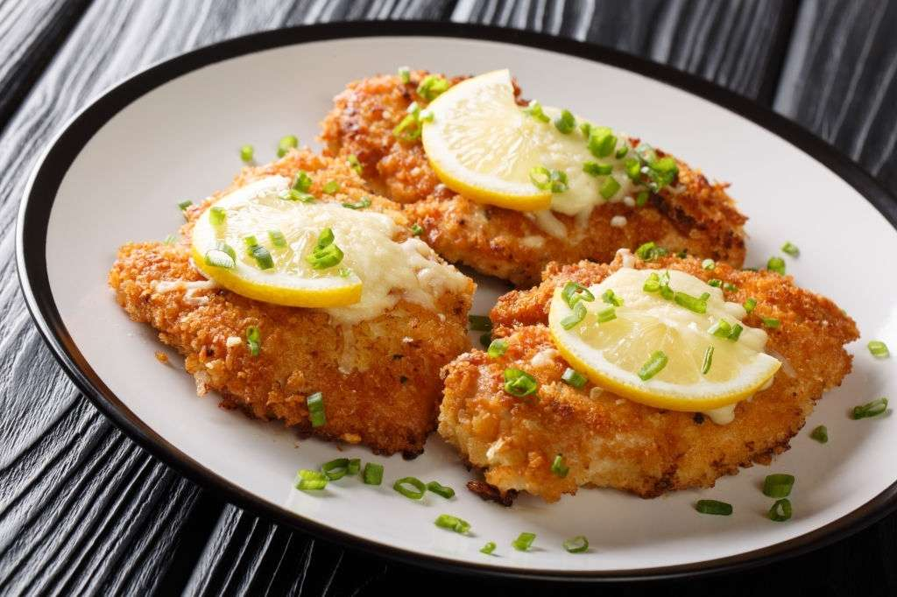

Listado de ingredientes
- 4 solomillos de pavo
- 2 huevos
- Pan rallado
Típica de Ucrania, los platos al estilo Kiev se acostumbran a preparar con pollo, pero en la receta que te proponemos utilizamos solomillos de pavo, que también funcionan estupendamente bien con esta delicia empanada.
Pasos a realizar
- Lava y pica el cebollino y el perejil. También pica el diente de ajo.
- En un bol, vierte la mantequilla a temperatura ambiente con el ajo, el perejil, el cebollino, el tomillo, la ralladura de limón y sal. Mezcla bien.
- A la mezcla anterior, dale forma de rulo, envuelve en papel film y mete en el congelador durante 1 hora.
- Salpimenta los solomillos y corta por un lateral, tiene que quedar una abertura para rellenar con una rodaja de mantequilla.
- Casca y bate los huevos en un plato, y salpimenta al gusto.
- Prepara dos platos, y en uno vierte harina y en el otro pan rallado.
- Retira la mantequilla del congelador y corta el rulo en 4 trozos. Coloca un trozo dentro de cada solomillo, y cierra con la ayuda de palillos.
- Pasa los solomillos por harina, huevo y pan rallado.
- En una sartén con abundante aceite, fríe los solomillos hasta que estén dorados por cada lado.
- Reserva los solomillos sobre papel absorbente y precalienta el horno.
- Hornea los solomillos a 180 grados durante 10 minutos.
- Retira los solomillos del horno, retira los palillos y a disfrutar.